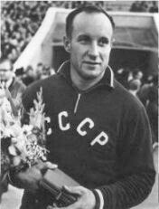

Олимпийский чемпион 1960
Василий Васильевич Руденков (3 мая 1931 — 2 ноября 1982) — советский легкоатлет, олимпийский чемпион по метанию молота, заслуженный мастер спорта СССР.
Руденков родился в Жлобине (Белорусская ССР). В 1948 году окончил железнодорожное училище, работал слесарем в вагонном депо, потом служил в армии. Именно в армии он впервые попробовал метать молот — и этот вид спорта стал делом его жизни. На выбор дисциплины повлияли успехи белорусского метателя Михаила Кривоносова: под впечатлением от его выступлений Руденков всерьёз занялся метанием молота под руководством тренера Евгения Шукевича.
Ключевые вехи карьеры:
За свою карьеру Руденков трижды становился чемпионом СССР и неоднократно обновлял рекорды страны. Он также известен тем, что в 1958 году на товарищеских соревнованиях в Филадельфии победил Гарольда Конноли — чемпиона Олимпиады 1956 года.
После ухода из большого спорта Руденков увлёкся тяжёлой атлетикой, выполнил норматив мастера спорта СССР и даже выиграл чемпионат Москвы. Позже работал спортивным инструктором. Василий Руденков ушёл из жизни в 1982 году в Жлобине. В его честь названа улица в родном городе.